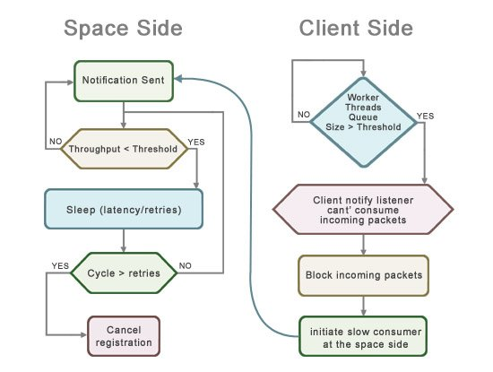

Section Summary: The space includes a special mechanism that detects clients that cannot consume the notifications sent fast enough - i.e. slow consumers.
Handling Slow Consumers
Traditionally, messaging-oriented middleware products have several methods for handling slow consumers:
1. Blocking or slowing down the producer
2. Spooling messages to disk and replaying at a later time
3. Discarding messages for the slow consumer
4. Dropping the slow consumer
Options 1-3 can be very costly in terms of performance and reliability. The options that guarantee reliability and consistency are blocking or slowing down the producer and spooling messages to disk and replaying at a later time.
These solutions have a very high price in terms of performance and scalability, that doesn't just affect the slow consumers, but also the entire cluster. Spooling messages to disk and replaying at a later time is considered more popular due to the fact that it affects the performance of the non-slow consumers indirectly, whereas when blocking or slowing down the producer the effect is direct and costly. These are the most common ways slow consumers are handled in the messaging world.
With GigaSpaces In-Memory-Data-Grid, options 1-3 are not be relevant, since in most cases the requirement is to maintain a consistent local image of a data set at the client side. Updates for this data set are sent into the client via notifications. This local view should be accessible to the client when there is a connection failure or a slow consumer running.
A different approach to handle slow consumers is to drop the client identified as a slow consumer, later allow it to get a snapshot of the current state of the data set from the server, and continue to receive updates from that point onward.
This approach is not feasible with traditional messaging systems, since the notion of 'current-state' does not exists. The space on the other hand, maintains the current state inevitably and therefore it makes much more sense to handle slow consumer by disconnecting it from the space server. Once the client is ready, allow it to reconnect, initializes its status by reading the relevant data set from the space, re-register for notifications and resume the notifications delivery.
How it Works?
When sending notifications to clients, the space includes a special mechanism that detects clients that cannot consume the notification sent fast enough - i.e. a slow consumer.
Slow consumers can cause problems, since they force the space to keep the notification in memory till all consumers consumed the event. Once the space process memory is full, the space is forced to slow down the response to clients, causing fast consumers to slow down. In extreme cases, this behavior might eventually cause the space process to exit abnormally with an out-of-memory error.
When the Slow Consumer is enabled, once the space detects a slow consumer, it automatically disconnects the slow consumer, cancel its notification registration and enforce it to reconnect (re-register for notifications). This ensures that fast consumers are not affected by the slow consumer behavior.
Slow consumers are determined by measuring the network consumption throughput (configured via the com.gs.transport_protocol.lrmi.slow-consumer.throughput parameter) sent from the space into a client. Once the space detects a client that consumes notifications below the defined throughput, it waits for a specifide duration (configured via the com.gs.transport_protocol.lrmi.slow-consumer.latency parameter) for it to recover. The space tries to determine several times (configured via the com.gs.transport_protocol.lrmi.slow-consumer.retries parameter) during the wait period if the client recovered - if it is still below the defined throughput, then its notify registration is forcibly canceled.

To allow the client to detect that the space removed its notify registration, it should register the notification using a short lease and renew it manually or automatically. See the Notify Container or the Session Based Messaging API for details how to renew the registration lease automatically. If the lease renewal failed, it means the space canceled the notification. In this case, the client should remove the current listener to cleanup its resources and then re-register for notify registration.
The LRMI thread pool queue size parameter, measured in Objects, configures the client and space server communication queue maximum size when processing incoming requests.
 In general, you should have a different LRMI thread pool queue size value for clients and for the space server.
In general, you should have a different LRMI thread pool queue size value for clients and for the space server.
When the LRMI thread pool queue size in the client side reached its limit (client can't consume incoming notifications), the client will stop consuming incoming network packets. This in return will initiate the slow consumer mechanism at the space side that will cancel the client notify registration.
Configuration - Server Side
To enable and tune the slow consumer mechanism, you should configure the LRMI layer at the server side with the following JVM system properties:
| Property | Description | Default | Unit |
|---|---|---|---|
| com.gs.transport_protocol.lrmi.slow-consumer.enabled | Specify whether slow consumer protection is enabled | false | |
| com.gs.transport_protocol.lrmi.slow-consumer.throughput | Specify what is the lower bound of notification network traffic consumption (in bytes) by a client which below it, is suspected as a slow consumer. | 5000 | bytes/second |
| com.gs.transport_protocol.lrmi.slow-consumer.latency | Specify a time period the space will evaluate a client suspected as slow consumer until it will be identified as a slow consumer. At the end of this time period, a client identified as a slow consumer will have its notification lease canceled. | 500 | milliseconds |
| com.gs.transport_protocol.lrmi.slow-consumer.retries | Specify the number of times within the specified latency limitation a space will retry to send notification into a client suspected as a slow consumer. | 3 | retries |
 It may be required to alter the default slow consumer parameters according to the specific scenario.
It may be required to alter the default slow consumer parameters according to the specific scenario.
 Please make sure you are not adding the services.config file to your server class path, this may cause the slow consumer to be turned on by default.
Please make sure you are not adding the services.config file to your server class path, this may cause the slow consumer to be turned on by default.
Configuration - Client Side
You should configure the following JVM system properties at the client side. These specify the capacity of the LRMI thread pool, and set a specific limit. This allows the client to block incoming requests once the capacity is reached, in this case an incoming notification invocation. This will trigger the slow consumer mechanism at the server side since that client will stop receiving new notification invocations.
 When using FIFO notifications, the fifo notify queue should be limited as well for the same reasons
When using FIFO notifications, the fifo notify queue should be limited as well for the same reasons
| Property | Description | Default | Unit |
|---|---|---|---|
| com.gs.transport_protocol.lrmi.threadpool.queue-size | specify the lrmi thread pool maximum queue size | Integer.MAX_VALUE | Notification Packets (object/batch) |
| com.gs.fifo_notify.queue | specify the fifo notifications queue size | Integer.MAX_VALUE | Notification Packets (object/batch) |